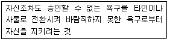
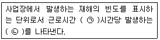
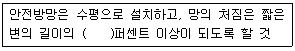

1과목: 산업안전관리론
1. 근로자가 중요하거나 위험한 작업을 안전하게 수행하기 위해 인간의 의식수준(Phase) 중 몇 단계 수준에서 작업하는 것이 바람직한가?
2. 위험예지훈련 4라운드의 순서가 올바르게 나얼된 것은?
3. 매슬로(Maslow)의 욕구단계 이론 중 제2단계의 욕구에 해당하는 것은?
4. 재해통계 작성 시 유의할 점 중 관계가 가장 적은 것은?
5. 사고예방 대책 5단계 중 작업상황을 파악하고 사고조사를 실시하는 단계는?
6. 안전ㆍ보건표지에서 파란색 또는 녹색에 대한 보조색으로 사용되는 색채는?
7. 안전관리조직의 형태 중 라인(Line)형의 특징이 아닌 것은?
8. 그림에서 안전모의 부품 명칭이 틀린 것은? (문제 오류로 복원중입니다. 정확한 내용을 아시는 분께서는 오류신고를 통하여 내용 작성 부탁 드립니다. 정답은 1번입니다.)
9. 산업재해조사표에서 재해발생 원인 중 작업ㆍ환경적 요인에 해당하지 않는 것은?
10. 일반적으로 태도교육의 효과를 높이기 위하여 취할 수 있는 바람직한 교육방법은?
11. 무재해운동의 3원칙에 해당되지 않는 것은?
12. 안전점검표의 작성 시 유의사항이 아닌 것은?
13. 스트레스(Stress)에 관한 설명으로 가장 적절한 것은?
14. 직무만족에 긍정적인 영향을 미칠 수 있고, 그 결과 개인 생산능력의 증대를 가져오는 인간의 특성을 의미하는 용어는?
15. 적응기제(Adjustment Mechanism) 중 다음에서 설명하는 것은 무엇인가?

16. 기억과정 중 과거에 경험했던 것과 비슷한 상태에 부딪쳤을 때 떠오르는 것을 무엇이라 하는가?
17. 「산업안전보건법」상 특별안전ㆍ보건교육 대상 작업이 아닌 것은?
18. 리더의 행동유형 측면에서 부하들과 상담하며, 부하의 의견을 고려하는 형태의 리더십은?
19. 재해율의 지표 중 도수율에 관한 다음 설명의 ( )안에 알맞은 것은?

20. 작업의 종류나 내용에 따라 교육범위나 정도가 달라지는 이론교육 방법은?
2과목: 인간공학 및 시스템안전공학
21. 인간 성능에 관한 척도와 가장 거리가 먼 것은?
22. 결함수(FT) 기호의 정의로 틀린 것은?
23. 결함수 분석의 최소 컷셋과 가장 관련이 없는 것은?
24. 목과 어깨 부위의 근골격계 질환 발생과 관련하여 인과관계가 가장 적은 것은?
25. 에너지 대사율(RMR)에 의한 작업강도에서 경작업이란 작업강도가 얼마인 작업을 의미하는가?
26. 레버를 10° 움직이면 표시장치는 1cm 이동하는 조종 장치가 있다. 레버의 길이가 20cm 라고 하면 이 조종 장치의 통제표시비(C/D비)는 약 얼마인가?
27. 작업장 인공조명 설계 시 고려사항으로 가장 거리가 먼 것은?
28. 어떤 물체나 표면에 도달하는 빛의 단위 면적당 밀도를 무엇이라 하는가?
29. 의자 좌판의 높이를 설계하기 위한 것으로 가장 적합한 인체계측자료의 응용 원칙은?
30. 시스템 안전계획의 수립 및 작성 시 반드시 기술하여야 하는 것으로 거리가 가장 먼 것은?
31. 촉각적 표시장치에서 기본 정보 수용기로 주로 사용되는 것은?
32. 동작경제의 원칙이 아닌 것은?
33. 결함수 분석에서 사용되는 사상기호로서 결함사상이 아닌 발생이 예상되는 사상기호는 무엇인가? (보기 오류로 복원중입니다.보기 내용을 아시는 분들께서는 오류 신고를 통하여 보기 작성 부탁 드립니다. 정답은 4번입니다.)
34. 소음이 심한 기계로부터 1.5m 떨어진 곳의 음압수준이 100dB라면 이 기계로부터 5m 떨어진 곳의 음압수준은 약 얼마인가?
35. 화학설비에 대한 안정성 평가 5단계 중 정성적 평가의 실시 단계는?
36. 시스템 설계자가 통상적으로 하는 평가방법 중 거리가 먼 것은?
37. 각각 10000시간의 평균수명을 가진 A, B 두 부품이 병렬로 이루어진 시스템의 평균수명은 얼마인가? (단, 요소 AB의 평균수명은 지수분포를 따른다.)
38. 아날로그(Analog) 표시장치의 선택 시 고려해야 할 사항으로 가장 적절한 것은?
39. 인간-기계 시스템에서의 기본적인 기능으로 볼 수 없는 것은?
40. 어떤 장치의 이상을 알려주는 경보기가 있어서 그것이 울리면 일정 시간 이내에 장치를 정지하고 상태를 점검하여 필요한 조치를 하게 된다. 그런데 담당 작업자가 정지 조작을 잘못하여 장치에 고장이 발생하였다. 이때 작업자가 조작을 잘못한 실수를 무엇이라고 하는가?
3과목: 건설시공학
41. 공업화 공법(PC 공법)에 의한 콘크리트 공사의 특징과 관련이 없는 것은?
42. 철근의 이음방식이 아닌 것은?
43. 거푸집 공사의 발전 방향으로 옳지 않은 것은?
44. 주로 이음이 필요한 지중보 등에서 특수 리브라스(Rib Lath)와 목재 프레임을 부속철물로 고정하고 콘크리트를 타설함으로써 거푸집 해체작업이 필요 없는 공법은?
45. 콘크리트 타설작업의 기본원칙 중 옳은 것은?
46. 말뚝 설치공법을 타입공법과 매입공법으로 구분할 때 다음 중 타입공법에 해당하는 것은?
47. 지름 3~5cm 정도의 파이프 끝에 여과기를 달아 1~2m 간격으로 박고, 이를 수평으로 굵은 파이프에 연결하여 진공으로 물을 뽑아내어 지하수위를 저하시키는 공법은?
48. 지반의 토질시험 과정에서의 보링 구멍을 이용하여 +자형 날개를 지반에 박고 이것을 회전시켜 점토의 접착력을 판별하는 토질 시험방법은?
49. 다음 건설기계 중 이동식 양중장비에 해당하는 것은?
50. 2개 이상의 기둥을 1개의 기초판으로 받치는 기초는?
51. 순수형 CM의 공사단계별 기본업무 중 시공단계의 업무가 아닌 것은?
52. 토공사용 굴착기계 중 위치한 지면보다 낮은 우물통과 같은 협소한 장소의 흙을 퍼올리는데 가장 적함한 장비는?
53. 공정계획에서 공정표 작성 시 주의사항으로 옳지 않은 것은?
54. 철근 콘크리트 공사에서 철근의 최소 피목두께를 확보하는 이유로 볼 수 없는 것은?
55. 콘크리트 공사에서 거푸집 설계 시 고려사항으로 가장 거리가 먼 것은?
56. 기둥거푸집의 고정 및 측압 버림용으로 사용되는 부속재료는?
57. 공정관리에 있어서 자원배당의 대상이 아닌 것은?
58. 공사계약 방식 중 계약기간 및 예산에 따른 계약에서 계악의 이행에 수 년을 요하는 경우 체결하는 계약은?
59. 철골구조의 용접 결함에 대한 검사방법이 아닌 것은?
60. 입찰의 절차에 있어 입찰공고에 포함되는 주요 항목이 아닌 것은?
4과목: 건설재료학
61. KSL 5201에 따른 1종 보통 포틀랜드시멘트의 28일 압축강도 기준으로 옳은 것은?
62. 재료의 열에 관한 성질 중 ‘재료 표면에서의 열전달→재료 속에서의 열전도→재료 표면에서의 열 전달’과 같은 열이동을 나타내는 용어는?
63. 금속의 종류 중 아연에 관한 설명으로 옳지 않은 것은?
64. 금속, 유리, 플라스틱, 목재, 도자기, 고무 등의 접착에 우수한 성질을 나타내며 특히 알루미늄과 같은 경금속 접착에 사용되는 접착제는?
65. 점토소성제품의 특징에 관한 설명으로 옳은 것은?
66. 9cm×9cm×210cm 목재의 건조 전 질량이 7.83kg이고 건조 후 질량이 6.8kg이었다면 이 목재의 대략적인 함수율은? (단, 절대건조상태가 될 때까지 건조)
67. 각종 도료 및 도료의 원료에 관한 설명으로 옳지 않은 것은?
68. 회반죽 바름의 주원료가 아닌 것은?
69. 점토의 종류별 특성과 용도에 대한 설명으로 옳지 않은 것은?
70. 물-시멘트비 65%로 콘크리트 1m2를 만드는 데 필요한 물의 양으로 적당한 것은? (단, 콘크리트는 1m2당 시멘트 8포대이며, 1포대는 40kg임)
71. 목재의 강도 중 가장 큰 것은? (단, 섬유에 펑행한 가력 방향임)
72. 미장공사에서 바탕청소를 하는 가장 주된 목적은?
73. 경랑 콘크리트 제작에 사용되는 골재와 거리가 먼 것은?
74. 강의 열처리란 금속재료에 필요한 성질을 주기 위하여 가열 또는 냉각하는 조작을 말하는데 다음 중 강의 열처리 방법에 해당하지 않는 것은?
75. 물을 가한 후 24시간 이내에 보통포틀랜드 시멘트의 4주 강도 정도가 발현되며, 내화성이 풍부한 시멘트는?
76. 다음 석재 중에서 외장용으로 적합하지 않은 것은?
77. 콘크리트용 골재에 관한 설명 중 옳지 않은 것은?
78. 천연수지ㆍ합성수지 또는 역청질 등을 건섬유와 같이 얼반응시켜 건조제를 넣고 용제에 녹인 것은?
79. 강재의 인장시험 시 탄성에서 소성으로 변하는 경계는?
80. 시멘트 모르타르 바름의 작업성이나 부착력 향상을 위해 첨가하는 혼화제에 속하지 않는 것은?
5과목: 건설안전기술
81. 웰 포인트, 샌드드레인공법 작업 전에는 압밀침하를 예상하여 간극수압을 측정하여야 한다. 이 간극수압을 측정하는 기구는 무엇인가?
82. 다음 중 차랑계 건설기계에 해당되지 않는 것은?
83. 철골작업을 중지하여야 하는 경우의 강우량 기준으로 옳은 것은?
84. 콘크리트 타설 시 안전수칙 사항으로 옳은 것은?
85. 건설공사에서 발코니 단부, 엘리베이터 입구, 재료 반입구 등과 같이 벽면 혹은 바닥에 추락의 위험이 우려되는 장소를 의미하는 용어는?
86. 다음은 산업안전보건법렁에 따른 추략의 방지를 위하여 설치하는 안전방망에 관한 내용이다. ( ) 안에 들어갈 내용으로 옳은 것은?

87. 사다리식 통로의 설치기준으로 옳지 않은 것은?
88. 기계운반하역 시 걸이 작업의 준수사항으로 옳지 않은 것은?
89. 콘크리트의 재료분리현상 없이 거푸집 내부에 쉽게 타설할 수 있는 정도를 나타내는 것은?
90. 기존 건물에서 인접된 장소에서 새로운 깊은 기초를 시공하고자 한다. 이 때 기존 건물의 기초가 얖아 안전상 보강하려고 할 때 적당한 공법은?
91. 비계의 설치작업 시 유의사항으로 옳지 않은 것은?
92. 슬레이트, 선라이트 등 강도가 약한 재료로 덮은 지붕 위에서 작업을 할 때 발이 빠지는 등의 위험을 방지하기 위한 산업안전보건법령에 따른 작업발판의 최소 폭 기준은?
93. 지반의 붕괴, 구축물의 붕괴 또는 토석의 낙하 등에 의하여 근로자가 위험해질 우려가 있는 경우 그 위험을 방지하기 위하여 취해야 할 조치로 옳지 않은 것은?
94. 현장에서 근로자가 안전하게 통행할 수 있도록 통로에 설치해야 하는 조명시설은 최소 몇 럭스 이상이어야 하는가?
95. 인력에 의한 하물 운반 시 준수사항으로 옳지 않은 것은?
96. 가설구조를 부재의 강성이 부족하여 가늘고 긴 부재가 압축력에 의하여 파괴되는 현상은?
97. 향타기 또는 향발기의 권상용 와이어로프의 안전계수 기준은?
98. 건설공사 착공 시 유해ㆍ험방지계획서 제출대상 사업 규모에 해당되지 않는 것은?
99. 유한사면에서 사면기울기가 비교적 완만한 정성토에서 주로 발성되는 사면파괴의 형태는?
100. 양중기의 와이어로프 등 달기구의 안전계수 기준으로 옳은 것은? (단, 화물의 하중을 직 접 지지하는 달기와이어로프 또는 달기체인의 경우)